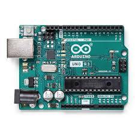

Semana 1: Introducción a Arduino
Visualización del documento:
Semana 2: Introducción a TinkerCard
Captura de mi proyecto:

Semana 3
Estructura de la página web
Visualización del documento:
Captura de mi proyecto:

Estructura de la página web